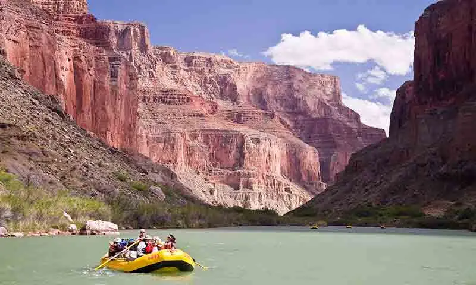

Most popular trip locations:
Idaho: Salmon River Rush
Dive into Idaho's wild side with Rapid Riffs on the Salmon River's Middle Fork! Navigate Class III-IV rapids through pristine wilderness, surrounded by rugged mountains and lush forests. Perfect for all skill levels, this trip offers heart-pounding action and cozy riverside camps for a true outdoor adventure. (Disclaimer: I wrote this with the help of AI)
Arizona: Grand Canyon Escape
Join Rapid Riffs for an epic ride down the Colorado River through the heart of the Grand Canyon! Tackle Class III-IV rapids amidst breathtaking cliffs and ancient rock formations. This guided trip blends adrenaline-pumping white water with serene floats, ideal for thrill-seekers and nature lovers alike. (Disclaimer: I wrote this with the help of AI)
Utah: Green river adventure
Experience the thrill of the Green River's Desolation Canyon with Rapid Riffs! This multi-day trip carves through Utah's stunning red rock landscapes, offering Class II-III rapids perfect for adventurers seeking both excitement and scenery. Paddle through towering canyons, spot wildlife, and camp under starlit skies for an unforgettable journey.(Disclaimer: I wrote this with the help of AI)